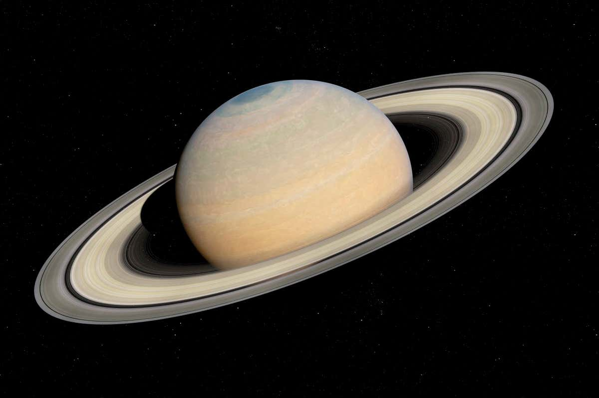

The Solar System
The solar system deals with the position of the earth and other planets in relation to the sun.
It compromises of the sun and the nine planets. All planets revolve around the sun in an"Elliptical orbits."
The universe is made up of many heavenly bodies, group of stars, which is called "galaxies or nebulars."
The universe contains 27 galaxies.
A satellite is a smaller body which moves around the planets; the moon is the natural satellite of the earth.

| Planets |
Number of satellites |
Distance from the sun |
Days to complete orbit |
| Mercury |
None |
57,600,000 |
88 days |
| Venus |
None |
107,200,000 |
225 days |
| Earth |
One |
148,800,000 |
365.25 days |
| Mars |
Two |
227,800,000 |
687 days |
| Jupiter |
Twelve |
772,800,000 |
11.9 years |
| Saturn |
Nine |
1,417,600,000 |
29.5 years |
| Uranus |
Five |
2,854,400,000 |
84 years |
| Neptune |
Two |
4,468,800,000 |
164.8 years |
| Pluto |
None |
5,850,000,000 |
287.4 years |
Characteristics/Features of the 9 planets
Mercury
- It is the smallest planet.
- It is the closest planet to the sun.
- It has the shortest orbit around the sun.
- It has no living thing because of high temperature.

Venus
- It is the second closest planet to the sun.
- It contains no living thing.
- It is referred to as the earth's twin because of its close proximity to the Earth
in size, mass and density.
- It has no satellite.

Earth
- It is the only planet where life exixts.
- It is also the only planet that contains oxygen and force of gravity.
- The earth only has one satellite called the moon.
- It takes the earth 365.25 days to complete its orbit.

Mars
- It is believed to be the second planet with the possibility of life.
- Mars has 2 satellites.
- It takes Mars 687 days to complete its orbit.
- Mars is 227,800,000 km from the sun.

Jupiter
- Jupiter is the largest planet in the solar system.
- Its surfaces contains gases such as hydrogen and methane with light
and dark binds.
- It has 12 satellites.
- It takes Jupiter 11.9 years to complete its orbit.
Saturn
- It is the second largest planet.
- It has 3 rings around it.
- It has nine satellites.
- Saturn is 1,417,600,000 km from the sun.

Uranus
- It is the only planet that revolves round the sun in a clockwise direction.
- A season in Uranus lasts for 42 years.
- It has just one ring.
- It has 5 satellites.

Neptune
- It is the smallest of the gas giants(Jupiter,Saturn,Uranus,Neptune).
- It has the strongest wind in the solar system.
- It has two satellites.
- Neptune is 4,468,800,000 km from the sun.

Pluto
- It is the farthest planet to the sun.
- It is the coldest planet.
- It has no satellites.
- It takes Pluto 284.7 years to complete its orbit.